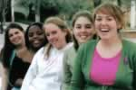

Bible Study
Basically we have two bible studies from which you can choose. However, we make the choice pretty simple since one is for those of the male persuasion and the other for those of the female persuasion.
ABS
ABS is a great opportunity for men to get together for fun, fellowship, and most importantly an opportunity to look deeper into the role that God has set forth for us as men. It is about time that men step up and begin to walk the walk that God has laid out. Come and go down that road with us.
The name ABS means Application Bible Study. Our goal is to look into biblical applications and learn how to better apply them to our lives. We aim for this to be a discussion based time.
The Bible study is tentatively scheduled for Thursdays at 8 PM in apartment 1612.
Catch-22
Catch 22 is Chi Alpha's girls only Bible study. We spend each Thursday evening together in fellowship (as girls do best) and in digging into God's word. The weekly lesson is usually more of a discussion, with each girl contributing their insights. We often include a book or devotional to guide our topics of conversation and we like to hear from guest speakers who have particular wisdom on the subject at hand. Overall, Catch 22 is a fun, relaxed time to study the Bible and get to know the girls in the group. Everyone is welcome to join us at any time. Even if you don't attend the regular Chi Alpha meetings we would love to see you at Catch 22! There is always a good time to be had.
The Bible study's meeting location for this fall has not been fully determined.